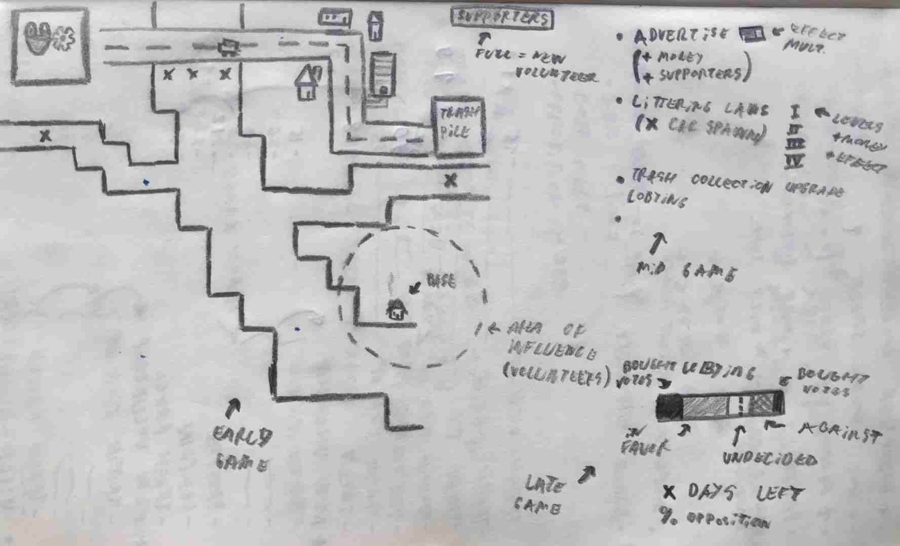
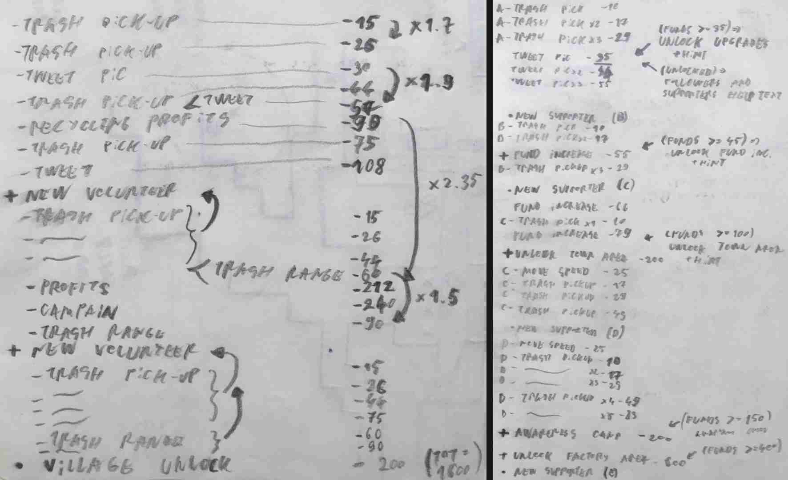

Rivaria is a game I made in one month for a game jam supporting #TeamSeas.The theme was ocean preservation and I chose to make a management
game about a group of volunteers teaming up to clean their river
and petitioning to stop polluting the waters.
I wanted to use the gameplay to explore what actions need to be
taken in real life to clean our waters (albeit in a more gamified
manner), with the hope of inspiring people to get involved with
their own cleanup efforts.

The idea of the game remained pretty much intact since the first
design sketch I made, at its core being a clicker game where you
can collect exponentially more trash as you progress.
To make the gameplay more interactive and reduce some of the
downtime of this type of game, I thought of letting the players
control the placement of the volunteers, moving them between the
most optimal trash collecting zones.
This helps make the game more strategic, while also providing a
good change of pace from the mental math of deciding which
upgrades to purchase. The biggest challenge with this project was balancing the
economy, as it can easily make or break a clicker/management style
game.
At first, I didn't know how to tackle balancing the price of the
upgrades and their cost multipliers. It was clear that assigning
them arbitrary values and playtesting again and again to dial them
in would take an absurd amount of time.

The solution I found was to make an ordered list of the upgrades
to be bought (to give the best feeling of progression), then to
go
down the list and set the base prices and multipliers such that
future upgrades would fit into my planned purchasing order.
This still took some iterating to get the pacing of the upgrades
right, but it was significantly faster and allowed far more
control over the upgrade path. Because of this, I could use the
mechanics to further develop the story by having them reflect the
steps needed to start cleanup projects like these. The one thing I would have liked to improve on is the ending.
With the deadline
approaching, I made the choice to cut back on some story elements
so I could spend more time polishing the beginning of the game
instead.
I wanted to explore some deeper questions on how corruption can
take roots in these kinds of groups, but ultimately decided that a stronger beginning would benefit the
players more than a deeper ending most would not get to
experience.
This seemed to be the right call, as many players were easily
hooked by the game and said they played for a lot longer than they
would have expected.
If you would like to give the game a shot, it can be played
in-browser here.